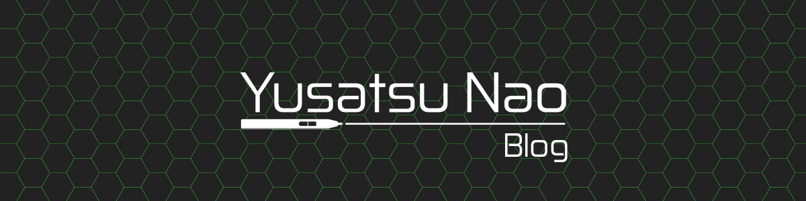

Hellooo guyss, today I'm releasing my third LINE Theme. It's all about race, beat all opponent, win the race and go around the world. This is a simple theme, so people can use this theme. If you like racing theme... Read More →
Hello guys, welcome to my official site. Right now I post an Anime Icon for this season, winter 2017. Actually it's not winter in here, it's rain season. ahh well forget it. This time I make Anime Icon for windows... Read More →

Hello guys, welcome to my official site. Happy New Year to you all, right now I post my second LINE Theme, well it takes a long time to release because the reviewer take a vacation. Maybe I should take a... Read More →

Hello again guys, welcome to my site. Today, I post something well, just what I said a few days ago on the last post. Right now, I will share an Anime Rainmeter. The main theme is Gi(a)rlish Number. This anime... Read More →
This is the third post of this site. Well, I have a lot of things to do right now so I'm a bit busy. But of course, I'll not leave this site, I will post something on here. Not tomorrow... Read More →

Hello guys, Now my first LINE Theme is now released, do you like military things and other stuff like that, and you want your LINE become like stronger you must use this LINE Theme, you can buy & Download it ... Read More →
Welcome, welcome guys to my official site. Thank you to you all for visiting my site here. In here you can get many things like a skins, icons, themes and etc. well, that is still in plan but, I will ... Read More →